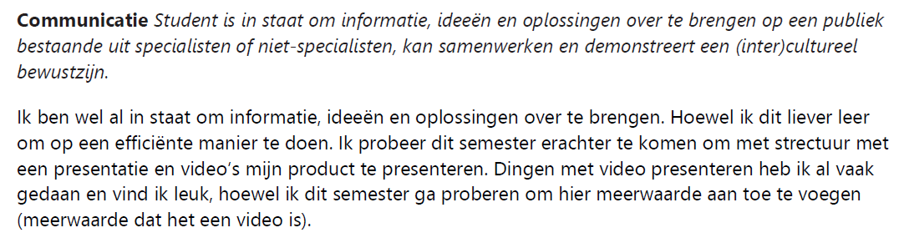

Ik heb aan het begin van het jaar leerdoelen voor mijzelf opgesteld die ik zelf wilde bereiken, deze is ook goed gekeurd door mijn semester coach en zal hier een korte reflectie per leerdoel doen.
Reflectie
Tot nu toe heb ik relevante informatie kunnen onderscheiden met niet relevante. Het ging misschien aan het begin niet zo goed, ik gaf niet altijd de goede zaken prioriteit. Maar na elke sprint demo en feedback gekregen van de opdrachtgever kan ik nu zeggen wat relevante informatie is en wat ik ermee moet.
Ik heb bijvoorbeeld dit semester nuttige informatie uit mijn rapportdocument gehaald. Ook heb ik uit alle feedback gesprekken met de stakeholders relevante feedback geobserveerd en hierop de juiste vervolgstappen toegepast.
Dit hoop dit ook straks te kunnen aantonen bij producten die ik heb gemaakt uit gebruikerstesten, dat ik de relevante informatie vraag en hier iets mee doe.
Het alles samenvoegen en het uitwerken van de onderzoeken heb ik geoefend door een proces stapsgewijs uit te leggen bij sommige deelproducten. Niet alleen voor Media maar ik heb dit mijzelf ook aangeleerd bij Game Design.

Ik heb dit semester goed mijn ideeën gepresenteerd naar mijn klanten, dit komt omdat ik dit semester dingen te presenteren met behulp van de customer journey. De video’s die onderdeel waren van mijn presentatie hadden meerwaarde, want ze verstrekte het concept en verhaal van de presentatie
Ik heb dit semester hele nieuwe inzichten en dingen geleerd. Programmeren met ReactJS, beter leren video editen, after effects, hoe je op de goede en correcte manier een testplan opzet, design guidelines volgen, scrum met backlog en userstory’s en hoe ik in een online omgeving moet samenwerken met een team. Ook heb ik geleerd om beter en efficiënter onderzoek te doen, ik heb het gevoel dat ik in deze leerdoel het meest en hards ben gegroeid.